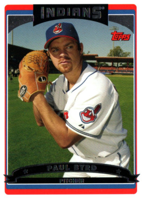

Crunching vibes. Calibrating BEEF sensors. Please stand by.
| # | Player | HR | AVG | VAR ▼(HR × OPS × weight²) / 1000 | BEEF (SLG × 1000) × (weight / 180)^1.5 | YOLO totalBases × SLG × (HR / AB) | DAWG RBI × OPS × (weight / height) | SAUCE AVG × HR × OPS × 100 |
|---|
| # | Player | W | ERA | SO | FILTH ▼(K9 × 100) / max(ERA, 0.5) | MENACE (SO - BB) × IP × (1 / max(WHIP, 0.5)) | CHILL (IP × W) / max(ER + BB, 1) | ICE (SO / max(BB,1)) × (1 / max(ERA,0.5)) × IP |
|---|

"Named for the great Paul Byrd, who threw 83 mph with a delivery that looked like he was checking his blind spot in traffic."
The BYRD Index celebrates pitchers who eat innings through craft, command, and sheer audacity rather than raw stuff. Pitchers with K/9 ≥ 7.0 are excluded. If you throw 100 mph, this leaderboard is not for you.
| # | Player | W | ERA | IP | K/BB | BYRD ▼(IP × K/BB) / K/9 |
|---|
"Jamie Moyer threw 78 mph changeups until age 49. Physics couldn't explain it. Neither can we."
The MOYER Score honors elder craftsmen — pitchers 33 and older who keep hitters off balance with nothing but guile, command, and the audacity to still be pitching. K/9 ≤ 7.5 and ERA < 4.50 required. These guys defy father time.
| # | Player | Age | W | ERA | IP | MOYER ▼(IP × Age × (9/ERA)) / K/9 |
|---|
The foundational metric of modern Brofessor Analytics. VAR quantifies the electromagnetic aura a player emits when they step to the plate. Originally theorized by Dr. Chad Thunderbat in his seminal 2019 paper "Mass, Velocity, and the Human Condition," VAR incorporates a player's home run output, on-base-plus-slugging efficiency, and raw mass to calculate their overall contribution to the vibes economy. A VAR of 0 indicates the player is, statistically speaking, a hologram.
Measures the theoretical force a player could generate if their biceps were directly connected to the barrel. Uses slugging percentage as a proxy for batted-ball authority, amplified by a mass coefficient. Players below 180 lbs receive a BEEF penalty because physics doesn't care about your feelings.
A reckless aggression index that rewards players who swing for the fences with no regard for personal safety or batting average. Total bases, slugging, and home run rate combine to measure how much a player has chosen violence at the plate.
The "dog in him" metric. Quantifies clutch production relative to body density. A high DAWG score means the player drives in runs, gets on base, and looks like they could deadlift a Buick. The weight-to-height ratio serves as a proxy for intimidation factor.
The drip-to-production ratio. Batting average ensures consistency, home runs ensure spectacle, and OPS ensures the player isn't just lucky. SAUCE is the metric that separates the "cool" from the "merely productive."
How nasty is this pitcher? FILTH divides strikeout rate by ERA to isolate dominance from damage. A high FILTH score means batters are swinging at air while the pitcher casually dismantles their confidence. Values above 200 indicate the pitcher may be breaking the Geneva Convention.
The mound dominance coefficient. Combines net strikeouts (K minus BB), workload (IP), and control (inverse WHIP) to measure how thoroughly a pitcher terrorizes the opposing lineup. Named after the emotion visible in their eyes.
For the quiet assassins. CHILL rewards pitchers who accumulate wins and innings while surrendering minimal damage. It's the "barely breaking a sweat" metric. High CHILL pitchers look bored while throwing a shutout.
Cold-blooded efficiency distilled to a single number. The strikeout-to-walk ratio amplified by ERA suppression and workload. ICE identifies pitchers who don't just get outs — they make hitters question their career choices.
Named for the great Paul Byrd, who threw 83 miles per hour with a delivery that looked like he was checking his blind spot in traffic. The BYRD score identifies pitchers whose effectiveness cannot be explained by conventional scouting metrics. A high BYRD indicates the pitcher is likely operating on frequencies only they can hear. Strikeout rates are deliberately penalized because anyone can strike someone out with a 99 mph fastball. Getting a ground ball to short with an 81 mph cutter that looks like it was thrown from a La-Z-Boy? That's a BYRD.
BYRD = (IP × K/BB) / K/9
Cutoff: K/9 < 7.0 required to qualify
The ideal BYRD pitcher: 200+ innings, terrific BB/9, K/9 under 7.0, and an ERA of 4.00 or higher. They eat innings, don't walk anyone, don't strike anyone out, and somehow keep getting the ball every fifth day. This rewards: (1) lots of innings — the journeyman grind, eating innings your ace is too precious to throw; (2) elite command — K/BB ratio rewards control artists who never walk anyone; (3) low strikeout rate — the less you strike guys out, the more BYRD energy. ERA is deliberately excluded from the formula because Paul Byrd never had a great ERA and neither should you.
Paul Byrd — 83 mph, pump fake delivery, somehow pitched 14 years in the majors. The namesake. The north star.
Jamie Moyer — Threw 78 mph changeups until age 49. Physics couldn't explain it.
Mark Buehrle — Sub-2-hour complete games. Worked faster than a fast food drive-thru.
Chad Bradford — Released the ball from his shoelaces. Sidearm doesn't begin to describe it.
Hideo Nomo — The Tornado. Turned his entire back to the hitter mid-windup.
Kent Tekulve — Looked like a praying mantis throwing sidearm from the bullpen.
Who ranks LOW: Nolan Ryan, Randy Johnson, anyone whose strategy was "throw it really hard." That's not BYRD energy. That's just being tall.
Named for Jamie Moyer, who threw 78 mph changeups until age 49 and somehow maintained a career ERA under 4.25 across 4,074 innings. The MOYER Score identifies the rarest breed of pitcher: the old man who can still get outs without any stuff whatsoever. These are not flamethrowers aging gracefully — they never threw hard to begin with. They're just still out there, defying father time with location, guile, and an AARP card in their back pocket.
MOYER = (IP × Age × (9 / ERA)) / K/9
Must be 33+, K/9 ≤ 7.5, ERA < 4.50
The qualifying criteria are brutally specific: (1) age 33 or older — you have to have been around; (2) K/9 of 7.5 or below — no sneaky good stuff allowed; (3) ERA under 4.50 — you're actually effective, which is the miracle. Age is multiplied in because a 42-year-old with a 3.50 ERA and 5.0 K/9 is significantly more absurd than a 35-year-old doing the same thing. The older you are, the higher your MOYER.
Jamie Moyer — The namesake. Pitched until 49. His fastball was slower than some changeups. Won 269 games on pure deception and the audacity to keep showing up.
Greg Maddux (post-35) — Stopped throwing hard at 30, kept winning until 42. Painted corners like Rembrandt.
Phil Niekro — Threw knuckleballs until age 48. Nobody could hit it. Nobody could catch it either.
Tommy John — Pitched until 46. They named a surgery after him and he kept pitching after getting it.
Who ranks LOW: Anyone under 35. Come back when your arm has some mileage on it.